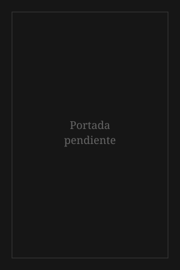

Mi biblioteca
Portadas de los libros que he leído y los que tengo en la mira. Marco dorado = uno de mis favoritos de siempre. Marco verde = prioridad dentro de la lista de deseos.
Leídos
-

Astrofísica para gente con prisa -

Breve historia de las doctrinas económicas -

Breves respuestas a las grandes preguntas -

Carta al padre -

50 cosas que hay que saber sobre física cuántica -

Cómo analizar el mercado -

Cómo hacer amigos e influir sobre las personas -
Demian -
Economía en un día -

El amor, las mujeres y la muerte -

El anticristo -

El arte de hacer preguntas -

El arte de pensar -

El laberinto de la soledad -

El principito -
Fundamentos filosóficos de la pedagogía -

Historia de la economía -

Historia del tiempo -

La interpretación de los sueños -

La metamorfosis -

Las 10 claves de la realidad -

Meditaciones -
1984 -

Pedro Páramo -

Psicología de las masas y análisis del yo -

Teoría general del empleo, el interés y el dinero
Lista de deseos
-

50 cosas que hay que saber sobre economía -
Contrahistoria del pueblo mexicano -

Crítica de la razón pura -

El cisne negro -
El mundo como voluntad y representación -

El pueblo soy yo -

Más allá del principio de placer -

No me puedes lastimar -

Parerga y paralipómena -

Psicoanálisis de los cuentos de hadas -

Réquiem por el sueño americano -

Thinking, fast and slow